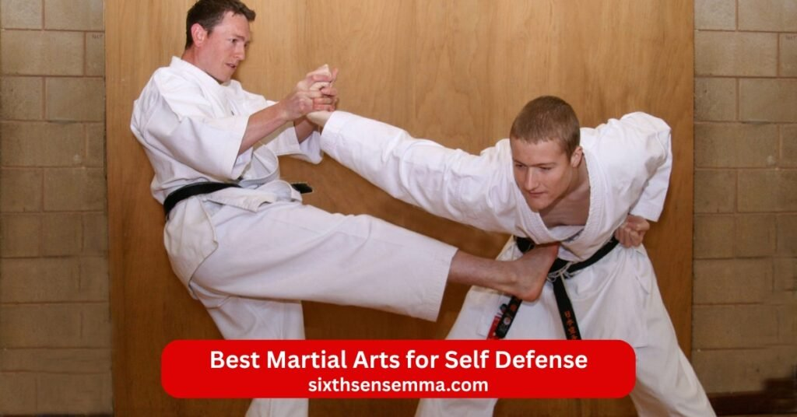
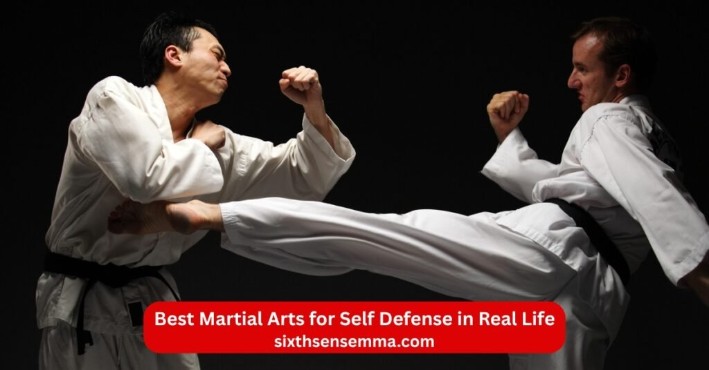
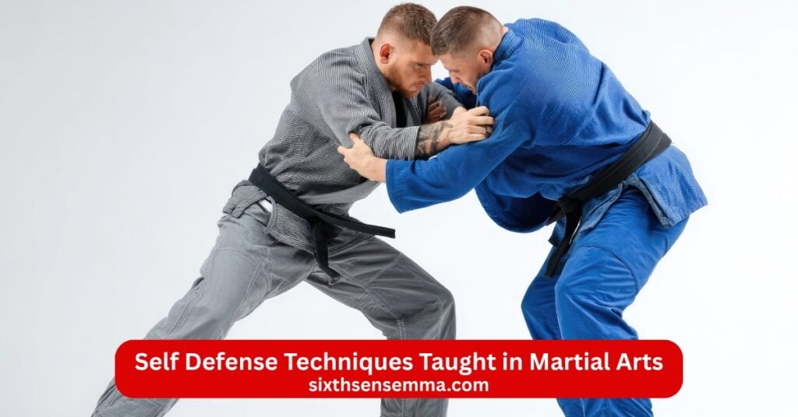

Best Martial Arts for Self Defense: Practical Training at SixthSense MMA

People often search for best martial arts for self defence or best self defense martial arts when they want real tools against threats. At SixthSense MMA we teach best martial art for self defense styles that work in unpredictable situations. Best martial arts for self-defense focus on quick ways to neutralize threats and stay safe. Top ten martial arts for self defense include grappling arts and striking martial options for full coverage. Most effective martial arts for self defense blend striking and grappling to handle various situations.
What Makes the Best Martial Arts for Self Defense
Best fighting style for self defense stands out by teaching how to end a fight fast without fancy moves. Best self defence martial art like krav maga or jeet kune use simultaneous attack and defense for real edge. Best martial art for self defence avoids rules and hits hard in self-defense scenario. Best martial arts to learn for self defense train self-defense skills that adapt to real-world situations. No martial art guarantees success but good ones build fighting ability through practice.
Real-World Effectiveness Over Sport Rules
Real-world effectiveness means styles like mixed martial arts test in street fight not rings. Most effective martial art for self defense skips points for direct stops. Best self defence fighting style uses opponent’s force against them in chaos. Best fighting styles for self defense handle real fight with no refs. Top self defense martial arts prove strong in self-defense situations over comps.
Practical Techniques for Everyday Situations
Practical techniques cover knee strikes elbow and joint locks for close threats. Best self defense fighting style teaches quick to learn moves against attacker. Best martial art for self-defense fits everyday situations like grabs or pushes. Best martial arts for defence include kicking techniques for distance. Best martial arts self defense builds habits for real-world self-defense.
Focus on Awareness, Escape, and Control
Awareness spots danger early while escape drills teach break free fast. Best form of martial arts for self defense stresses control opponents to neutralize them safe. Focus on these keeps you ahead in self-defense system. Best form of self defense martial arts trains spot run or fight smart. Best martial arts for self defense ranked rate high for this mix.
Best Martial Arts for Self Defense in Real Life

Best martial arts for self defense ranking puts practical self-defense styles top for street fights end quick. Top self defence martial arts like arts like karate or wing chun use technique over strength. Top martial arts for self defense blend old and new for real-world. Martial art for real-world needs self-defense techniques that work against multiple attackers. Many martial arts claim power but few match real-world self-defense scenarios.
Brazilian Jiu-Jitsu for Ground Control
Brazilian jiu-jitsu shines in ground fighting to handle larger opponents. Bjj uses jiu jitsu rolls and subs for self-defense martial art. Brazilian jiu jitsu turns bad spots into wins with opponent’s weight. Self-defense martial like this controls from bottom. Martial arts like brazilian jiu jitsu teach grapple for street use.
Muay Thai for Striking and Clinch Defense
Muay thai delivers hard kick punch and clinch work for stand up threats. Best striking art uses elbow and knee strikes close. Striking art like this stops rushes with power. Striking techniques build range control. Martial arts teacher often picks it for effective self-defense.
Boxing for Punch Defense and Footwork
Box focuses on sharp punch dodges and counters with fast feet. Boxing builds self defence against swings in crowds. Best martial for hands teaches slip and hit back. Effective martial arts include this for head protection. Effective martial adds hooks and jabs for quick outs.
Wrestling for Takedown Control
Wrestling masters takedowns and pins to dominate position. Wrestling counters grabs with sprawls and drives. Sambo wrestling ties in but pure form shines in clinches. Martial art like this stops charges cold. Chinese martial art or others borrow its base for ground.
Sambo for Grappling and Submissions
Sambo mixes throws subs and strikes for full mma. Sambo martial arts uses leg locks as key weapons. Japanese martial art influences show in grips. Traditional martial arts like this fit modern self-defense. Jeet kune or wing chun add but sambo covers all. Simultaneous defense and attack makes it strong.
Krav Maga for Multiple Opponents and Weapons Defense
Krav maga trains against multiple opponents and tools like knives. Krav maga stresses fast bursts to flee or drop foes. Knife fighting drills teach disarm and strike. Art for self-defense like this handles groups. Self-defense gains from its no rules approach.
Judo for Throws and Balance Disruption
Judo flips attackers using their momentum for hard falls. Judo builds balance to avoid trips while downing others. Martial art for self defense uses hip throws in close. Best martial art for falls teaches safe lands too. Best martial art for self adds chokes post throw.
Karate for Striking and Distance Management
Karate hits with karate snaps and blocks for space control. Taekwondo blends but karate keeps simple power. Arts like this teach katas for form. Best self defense martial art uses it for quick kicks. Martial art for self-defense fits open areas.
Taekwondo for Kicks and Agility
Taekwondo spins high kick for head or body reach. Taekwondo boosts agility to dodge and return fast. Best martial arts for self-defence includes its speed. Effective self-defense from legs keeps distance. Learn self-defense with its drills.
Wing Chun for Close-Range Combat
Wing chun chains hands in tight for traps and strikes. Wing chun uses center line attacks for direct hits. Chinese martial art like this fits halls or doors. Best self defence martial art for close quarters. Self-defense martial art teaches chain punches.
Traditional vs Modern Martial Arts for Self Defense
Best martial arts for self defense often spark debates between old styles and new systems. Traditional martial arts like karate taekwondo or wing chun carry history and discipline. Modern ones like krav maga or mma focus on what works now in street fights. Best martial art for self-defense mixes both but leans to tested tools. Choose the best martial based on your needs in real-world self-defense scenarios.
Strengths of Traditional Martial Arts
Traditional martial arts build strong base with katas forms and respect rituals. Styles like judo teach falls and throws using opponent’s force. Karate sharpens punch kick power and blocks for distance. Wing chun trains close chain hands and sensitivity. These give long term discipline and body control for life.
Why Modern Combat Systems Are More Practical
Modern systems test moves in live resists and multiple attackers cases. Krav maga drills dirty hits and quick escapes for unpredictable situations. Mma blends striking and grappling proven in cages for real fight. Modern self-defense skips rituals for direct neutralize ways. Practical self-defense favors these for fast results against larger opponents.
Self Defense Techniques Taught in Martial Arts

Self-defense techniques in good schools cover stand up close and ground phases. Martial arts like bjj muay thai teach layered responses to threats. Effective self-defense drills repeat escapes and counters for muscle memory. Self-defense system builds habits to spot and stop danger early. Learn self-defense through these for calm in chaos.
Defense Against Punches and Kicks
Block slip or parry incoming punch then counter fast in boxing or muay thai. Kick defense uses checks lifts or jams to close distance. Striking techniques teach head movement and shin blocks. Best striking arts train eyes to read swings early. Simultaneous defense and attack turns blocks into hits.
Escaping Holds and Grabs
Break wrist grabs with twists or strikes to weak points in krav maga. Clinch work in muay thai teaches knee or elbow out of hugs. Jiu jitsu uses frames and shrimps for bear hug escapes. Joint locks reverse control on grabber. Technique over strength makes small beat big here.
Ground Survival Techniques
Ground fighting in brazilian jiu-jitsu teaches bridge sweep or guard to stand up. Ground survival focuses get back to feet or sub from bottom. Grapple rolls build hips for escapes under weight. Bjj turns bad spot into win with chokes or arms. Real-world adds strikes if needed from floor.
Physical and Mental Benefits of Self Defense Training in Sixth Sense MMA
Training at SixthSense MMA brings full gains from best martial arts for self defense. Self-defense training shapes body tough and mind sharp. Martial art sessions mix hard work with smart drills. Effective martial arts here build lasting tools for life.
Improved Strength, Balance, and Conditioning
Rolls strikes and clinches raise full body power and heart stamina. Improved strength comes from lifts throws and pad hits. Balance sharpens on one leg kicks or sweeps. Conditioning grows to fight tired without drop. Sessions push limits safe for steady gains.
Increased Confidence and Mental Awareness
Facing partners in live drills builds trust in your self-defense skills. Increased confidence shows when you handle pressure calm. Mental awareness spots threats early from habit scans. Fighting ability rises with repeated wins in rolls. Calm grows from knowing you can protect.
Stress Control and Calm Decision Making
Hard rounds teach breathe deep and think clear under rush. Stress control comes from push past panic points. Calm decision making picks right move fast in chaos. Self-defense training wires brain for cool choices. Benefits carry to daily tough spots too.
Who Should Learn the Best Martial Arts for Self Defense
Best martial arts for self defense suit many people wanting real protection skills. Best self defense martial art builds tools to handle threats calm and quick. Best martial art to learn for self defense fits busy lives with fast gains. Top self defence martial arts welcome all backgrounds for growth.
Beginners With No Martial Arts Experience
Fresh starters find best martial arts for self-defense easy with step by step basics. Beginners learn stance block and simple counters first without rush. No martial arts experience needed as classes build from zero. Best martial art for self defence grows habits safe and steady.
Men and Women Seeking Personal Safety
Men and women pick best martial arts for self defence for daily carry confidence. Personal safety rises with drills against grabs or strikes. Best self defence martial art teaches spot danger and react smart. Self-defense martial fits both genders with practical moves.
Teens and Young Adults
Teens and young adults gain focus and strength from best martial arts to learn for self defense. Best fighting style for self defense helps handle peer pressure or risks. Young adults build life long self-defense skills early. Top martial arts for self defense adds discipline for school or work.
Why Choose Sixth Sense for Best Martial Arts for Self Defense
SixthSense MMA stands strong for best martial arts for self defense in Coppell. Best martial art for self-defense training here mixes proven styles safe. Best martial arts self defense programs focus on what works real. Best martial arts for defence path starts easy here.
Experienced Instructors Focused on Real-Life Self Defense
Experienced instructors bring years testing real-life self defense moves. Focused on street not sport they spot fixes fast. Real-life drills prepare for self-defense situations. Martial arts teacher shares tested self-defense techniques.
Practical Training for Everyday Situations
Classes drill practical responses to grabs pushes or crowds. Everyday situations like parking lots get covered direct. Practical training skips show for usable stops. Best martial arts for self defense ranked high for this focus.
Safe, Supportive, and Controlled Training Environment
Supportive partners cheer effort and help learn. Controlled rounds build skills step by step. Training environment keeps fun and respect high.
Programs Designed for Beginners and All Skill Levels
Programs start simple for new faces then add layers. Designed to match all skill levels with tweaks. Beginners get extra basics while others chain moves. Best martial art for self grows at your pace.
Confidence-Building and Personal Safety Focus
Sessions raise confidence through small wins and live tests. Personal safety becomes habit from repeated drills. Confidence-building carries to life outside gym. Focus on safety first builds calm power.
Contact Us
Reach out to the team at SixthSense MMA for questions about Best Martial Arts for Self Defense or any class. The academy in Coppell Texas welcomes inquiries from student of every age and level. Instructor and coach stand ready to help with enroll details or trial session. This martial arts school focuses on self defense skills and physical fitness in a supportive environment. Contact options make it simple to start your path in martial arts in coppell. Many find the dojo easy to connect with for kid programs or adult mixed martial arts.
- Phone 469 972 7800
- Email: info@sixthsensemma.com
- Location: 817 S MacArthur Blvd #100 Coppell TX 75019 United States
Conclusion
Best martial arts for self defense open real protection and growth at our gym. SixthSense MMA teaches effective martial tools that fit life. Gains in calm strength and awareness last forever. Step in and build your safety skills here.
Follow Us on Social Media
Stay connected with Sixth Sense MMA through our social media channels. Follow us for class updates, training tips, and a closer look at our self defense community.
FAQ’s
For street defense, where fights are unpredictable, no rules apply, and multiple attackers or weapons may be involved, Krav Maga or MMA are frequently cited as top choices. Krav Maga is designed specifically for chaotic real-world scenarios, emphasizing quick neutralization, de-escalation, and defenses against common attacks (grabs, knives). MMA, blending striking and grappling with intense sparring, prepares you for prolonged resistance and adapts to “no rules” better than sport-focused arts. Muay Thai or Boxing excel for stand-up distance management, but lack ground skills. Avoidance, awareness, and running are always the best “defense.”
Brazilian Jiu-Jitsu (BJJ) is generally better for self-defense. Taekwondo focuses on high kicks and stand-up striking, which can create distance but often relies on sport rules (point-sparring) and lacks grappling or close-range dirty fighting. BJJ excels in ground fighting, allowing smaller people to control or submit larger opponents using leverage, joint locks, and chokes—common in real fights that go to the ground. However, BJJ has limitations against multiple attackers (hard to disengage from the ground) or weapons. Supplement Taekwondo with grappling for balance, but pure self-defense favors BJJ’s proven real-world utility.
MMA is better for developing actual fighting skills through full-contact sparring and competition, making it highly effective in one-on-one no-rules scenarios. Krav Maga is better for pure self-defense, emphasizing quick escapes, multiple attackers, weapons, and real-world stress (e.g., adrenaline drills). MMA builds superior athleticism and adaptability but assumes fair fights; Krav Maga prioritizes ending threats fast without “winning.” Many recommend MMA for capability + Krav principles for mindset.
Similar to above, no absolute #1 exists. MMA is widely regarded as the most effective overall due to its integration of proven techniques and rigorous testing. For street-specific survival, Krav Maga edges out as #1 in many expert opinions.
Jiu-Jitsu (especially Brazilian Jiu-Jitsu) is stronger for self-defense. Traditional Karate emphasizes powerful strikes, blocks, and distance, but often lacks live resistance and ground work. Jiu-Jitsu focuses on grappling, submissions, and controlling opponents on the ground, where many real fights end. It allows weaker/smaller practitioners to defeat stronger ones via technique. Karate can be effective stand-up, but Jiu-Jitsu’s pressure-testing makes it more reliable in chaotic scenarios.
The “Big 4” commonly refer to the foundational disciplines in modern MMA:
Boxing (hand striking, footwork, head movement).
Muay Thai (kicks, knees, elbows, clinch).
Wrestling (takedowns, control).
Brazilian Jiu-Jitsu (BJJ) (ground submissions, grappling).
These form the core of effective no-rules fighting, as proven in UFC/MMA. Some sources include Judo instead of pure Wrestling.
Train with us in Coppell
The first class is free. Shorts, a t-shirt and a water bottle. We lend the rest.
Book a free class